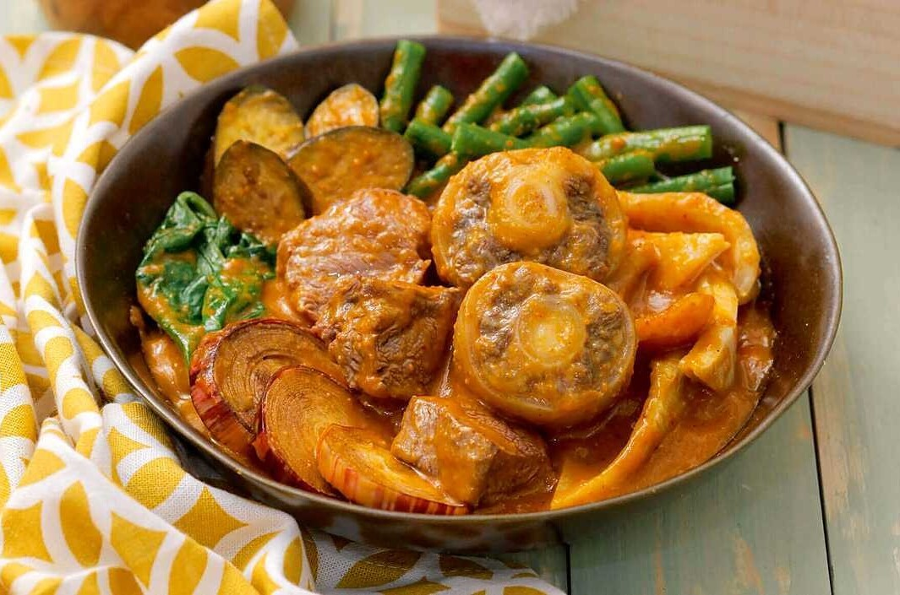

Serves: 4-6
Cook: 3hr
Prep: 30min
Kare Kare is a type of Filipino stew with a rich and thick peanut sauce. The traditional recipe of Kare-kare is composed of ox tail. There are instances wherein both ox tripe and tail are used. The vegetable components of the dish are string beans, eggplant, bok choy, and banana blossoms. Lightly browned toasted ground rice is used to thicken the sauce. It's perfectly pair with bagoong guisado (Filipino sautéed shrimp paste) for serving.
For the meats and beef stock:
For the peanut sauce:
For the vegetables and serving:
Make the ox tails and short ribs:
Finish the kare-kare:
Make the peanut sauce: